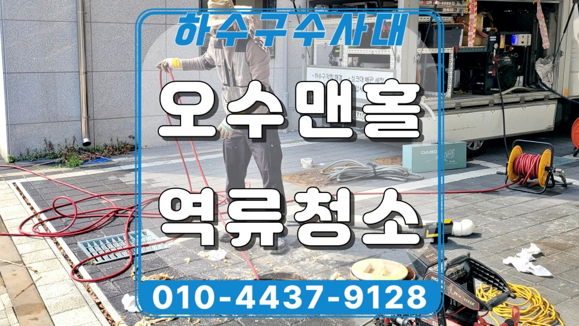
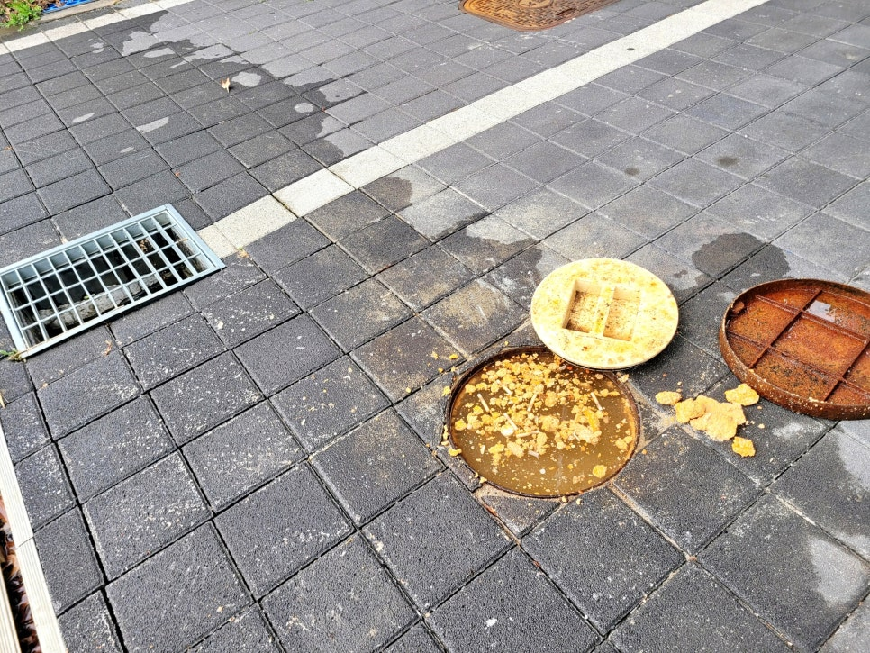
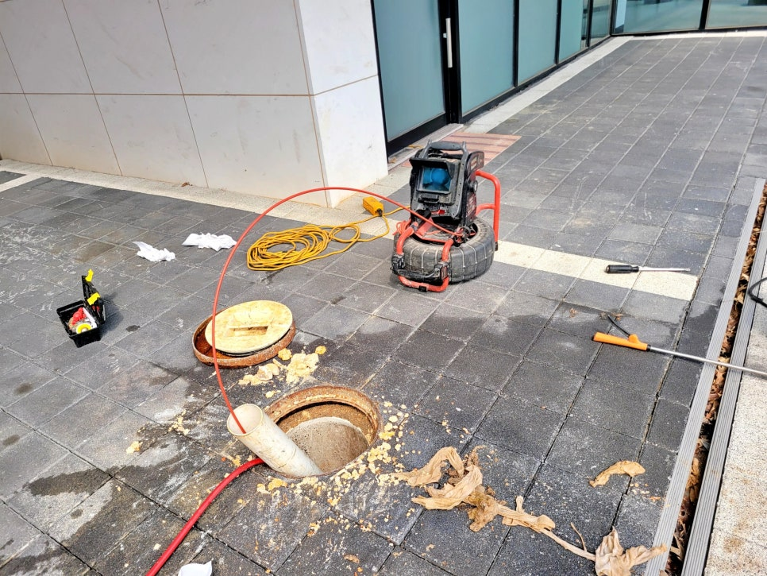
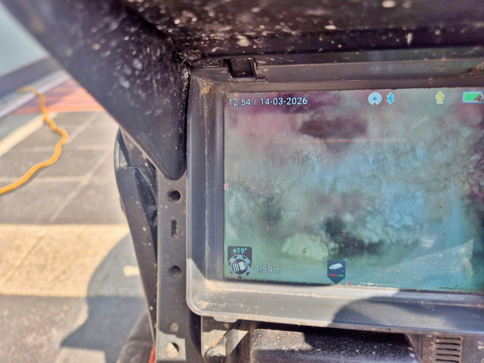
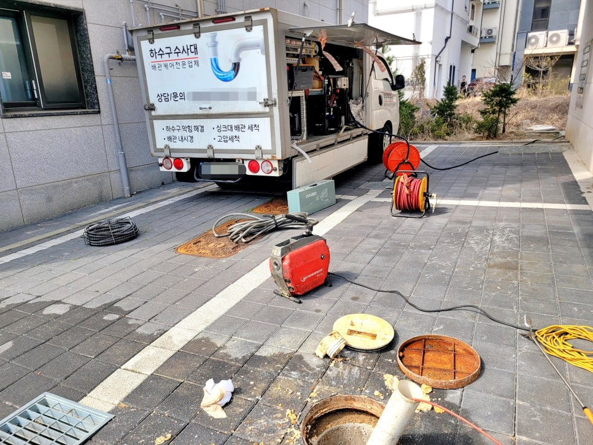
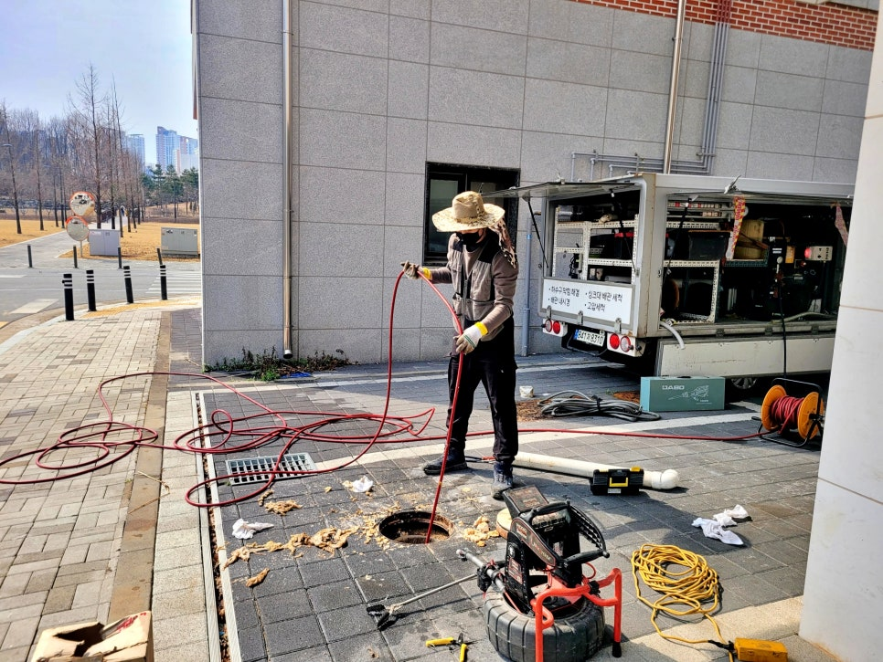
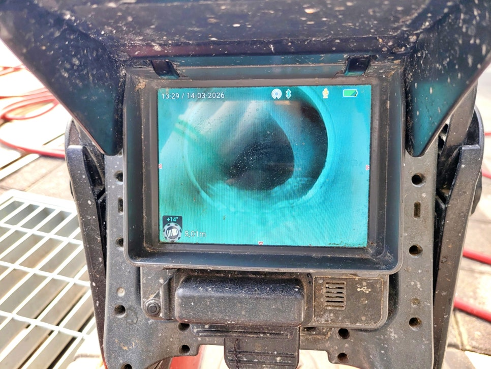

🏠 평택 고덕동 맨홀막힘 악취 원인 배관 고압세척으로 해결
평택 하수구막힘 전문 시공 후기

📋 작업 개요
- 위치: 평택
- 서비스 유형: 하수구막힘, 배관막힘, 맨홀막힘, 역류해결, 뚫는업체, 배관청소, 고압세척
- 작업 일시: 2026. 4. 7. 18:37
- 업체명: 하수구수사대 (010-5615-2118)
🔍 문제 상황
평택 고덕동 맨홀막힘 역류 악취
원인 배관 고압세척으로 해결함
반갑습니다.
평택시 고덕동 맨홀막힘 역류
고압세척 배관청소 전문업체
하수구수사대입니다.
이번에는 평택 고덕동 맨홀막힘으로
악취 민원이 이어진 상가 현장인데요.
오수 맨홀역류가 시작되며 주변으로
냄새가 퍼진 상황이었고,
배관청소와 고압세척이 왜 필요한지
현장에서 분명히 드러난 사례였습니다.
평택 고덕동 상가 맨홀막힘 역류 현장
평택 고덕동 맨홀역류 현장 개요
1. 위치 : 평택 고덕동
2. 문제 : 맨홀막힘 역류로 인한 악취민원
3. 원인 : 시관로 구간 막힘
4. 조치 : 양방향 고압세척 배관청소
상가 외부 오수받이를 열어보니
이미 내부 오수가 차오른 상태였고,
맨홀 주변 바닥까지 넘쳐 불편과
민원이 커질 수밖에 없었는데요.

🔎 원인 분석
💡 전문가 진단: 평택 고덕동 맨홀막힘 역류 악취원인 배관 고압세척으로 해결함
내시경 카메라 점검 과정
먼저 오수받이에서 시관로로 나가는
구간에 내시경 장비를 투입해 보니
초반 구간부터 오염이 심했고,
배관 내부에 물티슈와 기름 찌꺼기가
달라붙어 통로가 막혀 있었습니다.
특히 사진처럼 배관 내부 곳곳에
이물질이 걸리기 쉬운 상태가 보였고,
오수 흐름이 시원하게 빠지지 못해
역류가 반복될 수밖에 없는
조건이 만들어져 있었는데요.
맨홀 배관 고압세척 청소 장면
이번 평택 고덕동 맨홀막힘 현장은
단순한 일시적 막힘이 아니라
오수받이에서 시관로까지 이어지는
배관 길이가 긴 데다
그 구간이 역구배라는 점이었죠.
참고로 이런 구조에서는 물티슈처럼
물에 녹지 않는 이물질이 쌓이기 쉽고,
기름기까지 굳어 붙으면 조금씩 배수
저항이 커지면서 결국 맨홀역류와
악취로 이어지게 되는데요.
그래서 단순 스프링 작업으로는

🔧 작업 과정
표면만 잠깐 뚫리는 수준에 그칠 수 있어
평택 고덕동 맨홀막힘은 고압세척으로
배관 벽면에 붙은 오염물까지 제거하고
밀어내는 방식으로 진행했습니다.
배관 고압세척 청소가 진행되면서
내부에 물티슈와 굳은 기름 슬러지가
계속 배출됐고, 막힘 원인이 눈에 보일
정도로 엄청난 양이 쏟아져 나왔는데요.
중간중간 내시경으로 내부를 다시 보며
세척할 범위를 조정했는데요.
막혀 있던 구간이 열리면서 배관 내벽도
한층 깨끗해졌고 막힘 없이 배출되는
모습이 확인됐습니다.
평택 고덕동 맨홀역류 청소 작업
이후 오수받이 쪽 물 흐름을 보니
정체되던 물이 한쪽으로 몰리지 않고
시관로 방향으로 안정적으로 빠졌고,
심각했던 악취도 점차 사라지기
시작했는데요.
※평택 고덕동 맨홀막힘 원인
1) 시관로 방향 배관 구간 역구배
2) 물티슈와 굳은 기름기 누적
※배관청소 고압세척 작업 과정
1) 내시경 진단 후 고압세척 진행
2) 배관 내부 오염층을 정리하고,
배출 상태를 보며 문제 구간을
끝까지 정리한 것이 핵심
배관 고압세척 후기를 마치며
오늘 여러분께 소개한 후기를 통해
물티슈를 자주 버리거나 기름 성분이
오수배관으로 반복 유입되면 재발
가능성이 높기 때문에 사용 습관
관리도 중요하다는 점을 보여준
현장이었습니다.
막힘 구간 뚫리고 청소된 모습
악취만 잡는다고 끝나는 일이 아니라


✅ 작업 완료
배관 구조와 사용 환경까지 함께 봐야
재발을 줄일 수 있는 사례였는데요.
하수구수사대는 현장 원인을 정확히
진단하고 효율적인 방식으로 청소해
문제를 해결해 드릴 수 있었습니다.
이상으로
"평택 고덕동 맨홀막힘 악취 원인"
고압세척으로 해결편을 정독해
주셔서 감사합니다.
#평택고덕동맨홀막힘 #평택고덕동맨홀역류 #평택하수구업체 #평택하수구청소업체 #고덕동하수구업체 #고덕동상가맨홀배관막힘 #고덕동고압세척업체 #평택고압세척전문




⚠️ 하수구 배관 막힘 예방 및 관리 가이드
- ✅ 머리카락, 비닐, 물티슈 등 물에 분해되지 않는 이물질은 하수구 유입을 절대 금지해 주세요.
- ✅ 하수구 거름망을 씌우고 모여진 이물질은 주기적으로 쓰레기통에 바로 비워주셔야 합니다.
- ✅ 배관 노후가 심할 경우 이물질이 더 쉽게 걸리므로 주기적인 배관 세척(고압세척 등)을 권장합니다.
- ✅ 작업 후 1년 이내 재발 시 하수구수사대에서 무상 A/S 보증 서비스를 제공합니다.
💡 핵심 정리
- 확실한 장비 작업(내시경 점검 및 샤프트 스케일링)으로 원인을 뿌리 뽑습니다.
- 작업 후 1년 이내에 동일한 부위 재발 시 100% 무상 A/S 서비스를 보장합니다.
- 서울 · 경기 · 인천 전 지역에 24시간 언제든 긴급 출동할 수 있도록 항시 대기 중입니다.
❓ 자주 묻는 질문 (FAQ)
🚨 평택 하수구막힘 문제로 고민이신가요?
정확한 원인 진단과 확실한 시공으로 재발 없는 해결을 약속드립니다.
24시간 긴급 출동 | 서울 · 경기 · 인천 전지역 | 1년 내 재발 시 무상 A/S